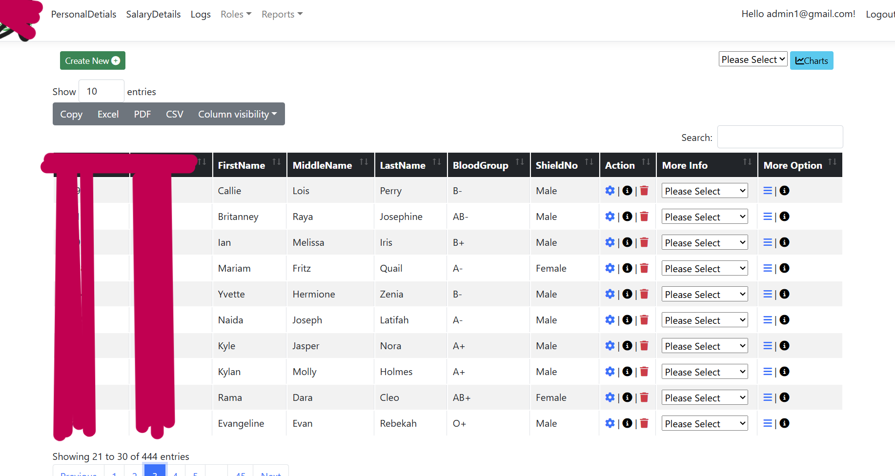

Hermes Project
Real Work Project at NICE
At NICE, I worked on a project called Hermes. The application was an internal tool. Hermes is a cloud-based platform that provides a comprehensive solution for managing and utilizing data from multiple sources. NICE specializes in call center software, offering storage for calls, video, chat, and email from companies worldwide. The platform allows users to access AWS S3 data and transfer it to another S3 bucket, an SFTP server, an artifactory server, or a physical storage device. The application often runs for extended periods, ranging from days to weeks, depending on the data size being transferred. It is designed to be resilient to network failures and other potential issues during the transfer process. The backend consists of four main workers: the Meta Data Retrieval Worker, which retrieves metadata from Elasticsearch or DynamoDB; the Glacier Restore Worker, which restores data from Glacier to S3; the S3 to S3 Transfer Worker, which transfers data between S3 buckets; and the SFTP Worker, which transfers data from S3 to an SFTP server. The frontend was developed using an ASP.NET Core web application, while the backend was built with .NET Core. The database used was MS SQL, and the queuing system was based on SQL Server.
Black Market SSP Application
Project
This is my application called BlackMarket SSP. This application tracks the currency exchange rate of the black market in South Sudan. It also tracks the exchange rate of the official bank rate. Additionally, it tracks the daily production of all the petroleum operating companies in South Sudan. The application is available on the web and on mobile platforms, both Android and iOS. The application was developed using React Native for the UI, and the backend was developed using Node.js and Express.js. The database is Firebase Realtime Database. The backend consists of a combination of Firebase functions that periodically gather data from relevant sources, and services that gather data from multiple sources to accurately estimate the current black market rate of the South Sudanese pound against 10 currencies in the region around South Sudan and globally. The application also has a social element where users can upvote or downvote daily rates and comment on rates in their respective areas.
Project 1 Screenshot
This is the login screen.
Project 1 Screenshot
This is the Petroleum Operation Company screen.
Project 1 Screenshot
This is the Petroleum Operation Company charts page.
Project 1 Screenshot

This is the SSP official rate screen, with data sourced from the Bank of South Sudan (BOSS).
Project 1 Screenshot

This is the SSP official rate screen statistics page, with data sourced from the Bank of South Sudan (BOSS).
Project 1 Screenshot

This is the SSP official rate screen statistics page, with data sourced from the Bank of South Sudan (BOSS).
Project 1 Screenshot
This is the black market rate screen, with data sourced from accurate estimations from multiple sources.
Project 1 Screenshot

This is the black market rate screen comments section.
Organizational Identity Management System
This project is a comprehensive CRUD application built using ASP.NET MVC with the Razor View Engine, designed to manage personnel data within an organization. The system integrates with an SQL backend to ensure robust data handling and secure storage. The application UI has over 32 different pages, the Database contains over 25 different tables.
Key Features:
- Personnel Management: The application allows for detailed tracking of employees' personal information, including salary, health conditions, blood type, assignments, roles, and educational history. This ensures that all critical data is centralized and easily accessible for HR and administrative purposes.
- Role and Assignment Tracking: The system supports dynamic role assignments and tracks each individual's current projects and responsibilities, enabling efficient resource management and role-based access control.
- Health and Training Records: The application maintains comprehensive records of employees' health statuses and training programs, helping the organization stay compliant with health and safety regulations while fostering continuous professional development.
Technical Highlights:
- ASP.NET MVC Framework: Leveraging the power of ASP.NET MVC, the application follows the Model-View-Controller design pattern, ensuring a clear separation of concerns, improved code maintainability, and scalable architecture.
- Razor View Engine: The user interface is built with Razor, allowing for clean and efficient rendering of HTML and seamless integration with server-side code.
- SQL Database Integration: The backend utilizes a SQL database, providing a reliable and structured storage solution. This ensures data consistency, integrity, and ease of querying for analytical purposes.
- Scalability and Security: The application is designed with scalability in mind, supporting future expansions in both data volume and functionality. It incorporates best practices for data security, including encrypted data storage and secure user authentication.
This project demonstrates my expertise in full-stack development, system design, and database management, showcasing my ability to build robust and user-friendly applications that address real-world business needs.
Project 3 Screenshot: Identity Login Page
This is the login screen for the Identity Management System.
Project 3 Screenshot: Main Page
This is the main page, from where you can navigate to over 32 different pages using the dropdown menus.
Project 3 Screenshot: Personal Details
This page displays all the details and information entered for each person.
Project 3 Screenshot: Dashboard
This is the dashboard where you can see various charts.
Project 3 Screenshot: Report
This is one of the reports you can generate.
Project 3 Screenshot: PDF Generation
This is a PDF you can generate that includes an individual's details.